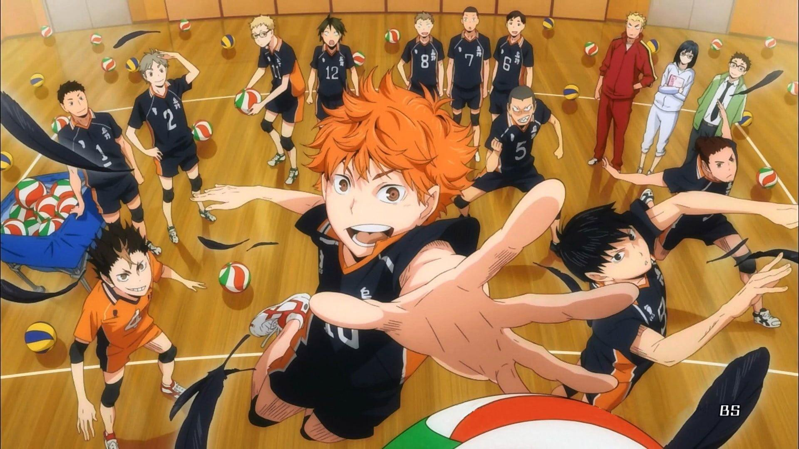

Volleyball is one of my favorite hobbies because it combines physical activity, teamwork, and fun. I enjoy the excitement of every rally, the challenge of making a perfect serve, and the satisfaction of scoring a point for my team.
My interest in volleyball was also inspired by the anime Haikyuu!!, which showed me the importance of hard work, teamwork, and determination. It motivated me to appreciate the sport and inspired me to try playing volleyball myself.

Want to learn more about the sport? Visit this website to explore its rules and history.
Learn More About VolleyballHaikyuu!! reminds me that becoming better takes patience, practice, and determination. It shows that even players with different strengths can achieve great things when they work together as a team.
Just like the characters in the anime, I want to continue improving my skills, learning from my mistakes, and enjoying every moment of playing volleyball.
"Never give up, keep practicing, and always trust your team!"
Every game is an opportunity to learn, improve, and become a better player.